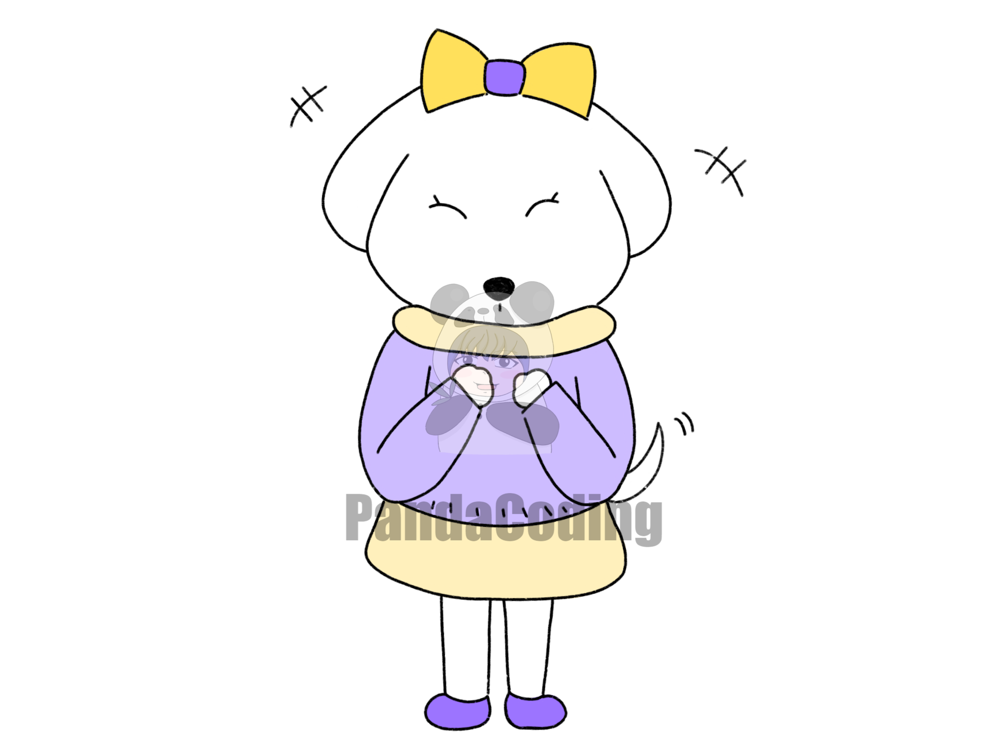

당신의 연애유형은?!
난 네가 좋아 너무 좋아, 애교만땅 '개'

애교쟁이 그 자체인 당신! 둥글둥글하게 처세를 잘 하고, 붙임성이 매우 좋아 사교성이 매우 뛰어난 편이랍니다. 또한 궁금한 것을 참지 못해 호기심이 많고, 강아지같이 상대방에게 찰싹 달라붙는 것을 좋아하는 스타일이에요. 성격이 매우 쾌활하나, 감정의 기복이 은근히 심해 상대방이 하는 말에 대해 크게 상처받는 편입니다. 또한 성격이 급한 경우가 많아, 차분하게 행동을 하지 못하는 편이기 때문에 이 점을 좀만 조심하면 좋을 것 같아요!